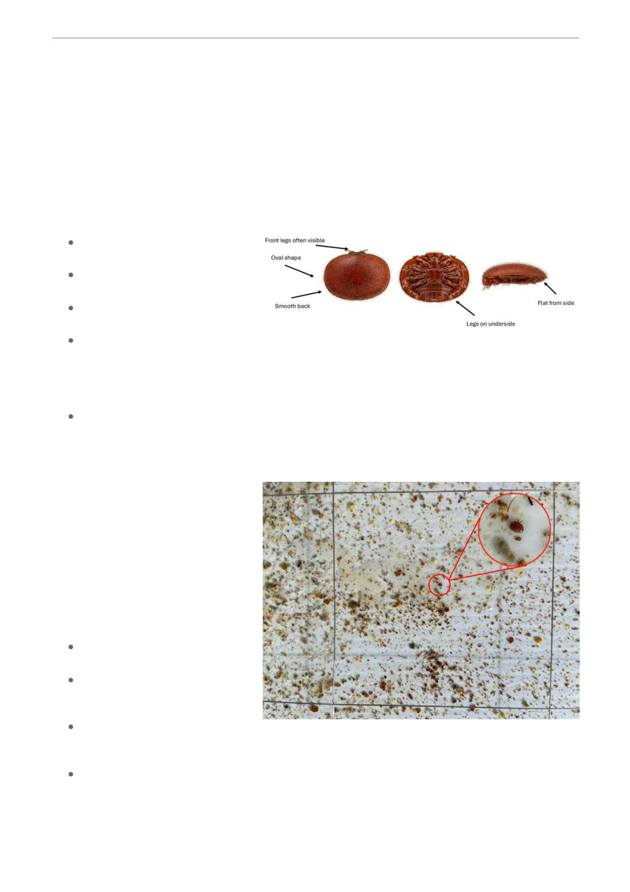

Enlarged diagram of varroa mites from the top, underneath
and side.
Photo of a board from below a screened bottom, taken with
a five-year-old iPhone 11. The area is about 10 cm wide (the
wire grid is 7.5 cm square). The enlarged mite is identifiable
from the crisp oval shape and the shiny shell of the mite.
The two protruding legs are confirmation that this is a
varroa mite.
Is it varroa?
By Bruce Ward
At our last meeting we had a session on how to identify varroa mites, with some sample mites
available for members to look at. This is a quick update for those who were present, as well as a
catch-up for those who were not.
You are only likely to see varroa if you are looking for it. Most of us will first see mites in our
alcohol/soapy water wash or on the removable slide under a screened bottom board.
Varroa can be seen with the naked eye, but you need magnification to identify them. Once you get
used to seeing mites, you may not need magnification to count them.
Varroa mites are about the size
of a pin head.
Usually dark reddish brown in
colour.
Distinctly oval shape and quite
flat when viewed from the side.
Front legs are often visible –
like two feelers sticking out
from one side. When present,
this may be all the confirmation
you need.
Legs are visible when a mite is on its back.
A good field lens or jewellery loupe with 10x magnification is ideal for identifying mites. As some
discovered at the meeting, the use of a lens needs some practice, and good lighting is essential. It is
much easier in bright daylight, and difficult with normal indoor lighting (as we had at the meeting!).
There are good reasons why
entomologists, geologists and
jewellers all use a similar lens for field
work and it is well worth having a
good field lens in your beekeeping kit
and to practice using it.
A good mobile phone camera can
sometimes be used, but also needs
some practice. A few tips:
Good lighting is essential.
Bright, indirect sunlight is best.
Hold the phone 5-10 cm from
the subject and use a small
amount of zoom.
Too much zoom magnifies
shaking and increases blurring
of the image.
Take a photo and then zoom in
on the image.